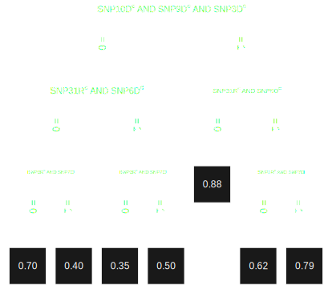
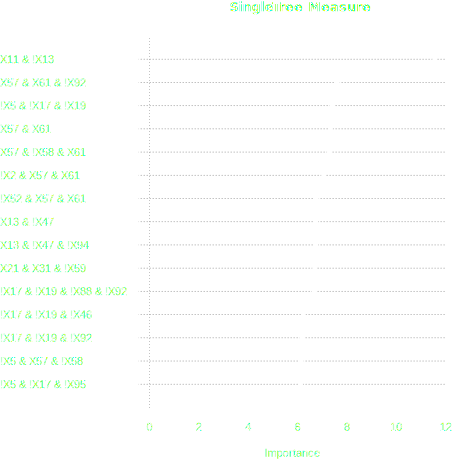
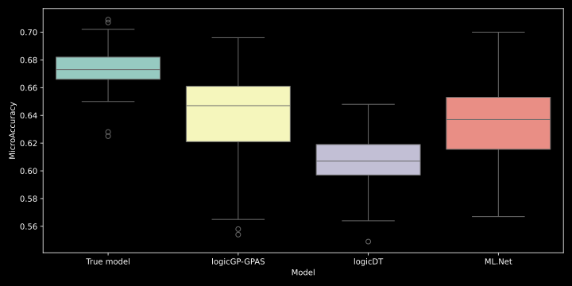
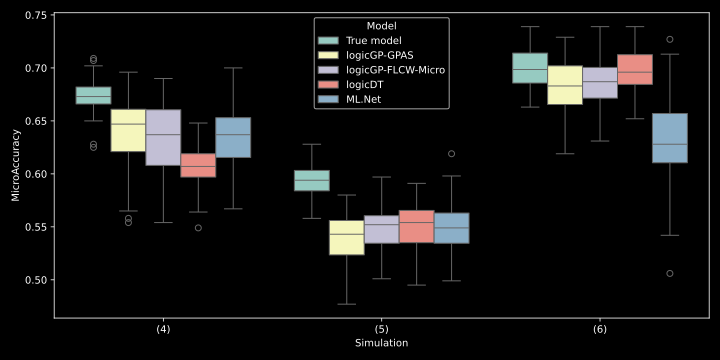

An interpretable model is […] following a domain-specific set of constraints that make reasoning processes understandable. […] Logical models […] are among the most popular algorithms […], since their statements provide human-understandable reasons for each prediction.
Rudin et al. (2021) Interpretable Machine Learning
It is well-known that in the analysis of genetic features such as SNPs, interactions, e.g., gene-gene interactions […] and gene-environment interactions […], play a crucial role.
Lau et al. (2024) logicDT: a procedure for identifying response‑associated interactions between binary predictors
| SNP1 | SNP2 | … | SNPP | Case |
|---|---|---|---|---|
| 0 | 2 | … | 1 | 0 |
| 1 | 2 | … | 0 | 0 |
| … | … | … | … | … |
| 2 | 0 | … | 0 | 1 |




R package
scrime

